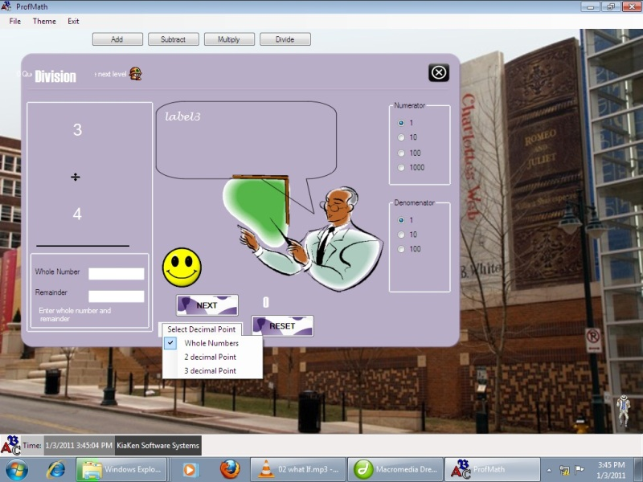

user manual
| Chapter |
Division Form:
This module provides you with several options for providing an answer.
I) The default (and first) option is providing the whole number and remainder. In this option, both the whole number and remainder Must be provided. This means that if either the whole number or remainder is 0, then input 0 into the appropriate textbox.
II) The second and third options is providing the answer in either 2 or 3 decimal places. In this option ensure that your answer is provided in the correct decimal place. Kindly note that an answer provided with the wrong decimal point will be evaluated as wrong.
Also note that in these options all answers are rounded off.

<<Previous